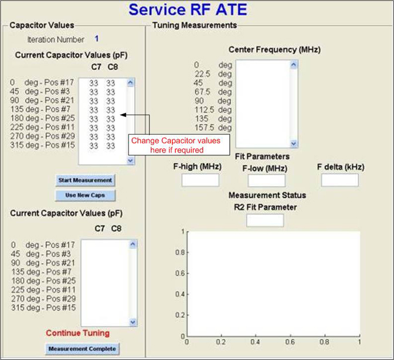
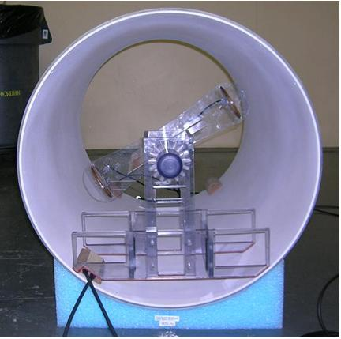
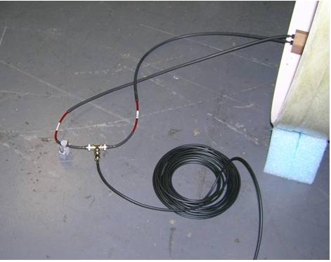

Operating Documentation
Direction 5670000, Rev# 1
Module Version 5.0, Version Date 5/27/09
Operating Documentation |
| ||||
| Strong Magnetic field | ||||
| FERROUS MATERIALS CAN BECOME DANGEROUS PROJECTILES IN THE PRESENCE OF THE MAGNETIC FIELD PRODUCED BY THe MAGNET. | ||||
| DO NOT BRING ANY FERROMAGNETIC TOOLS OR EQUIPMENT INTO THE MAGNET ROOM. |
| ||||
| Electrical shock hazard | ||||
| Contact with connectors leading to an energized power supply can cause electrical shock. | ||||
| Follow lockout/tagout procedures while performing services to electrical connection components. |
Portable Network Analyzer
Tuning fixture 5270309
Round Loop Antenna 5308564
Rectangular Loop Antenna 5266977
Tuning Stubs with shorts 5309507
RG 58 cables nearly 30 feet long (Qty 2)
Soldering station and Iron (Magnum Hexacon TOT - 2300 or similar)
Soldering wire 2103564P2
Insert the two Round Loop antennas and the Rectangular Loop antenna in the antenna holder slots as shown in Illustration 3.
Slide the round pipe through the two holes of the fixture base and place the round pipe pin as shown in Illustration 4.
Align the track on the round pipe and the slot in the two loop antenna holder and insert it towards the base of the tuning fixture.
Connect the laptop and mouse. Power ON the laptop with proper power supply.
Connect the orange Ethernet cable or equivalent between the laptop Ethernet port and the Vector Network Analyzer (VNA) Ethernet port.
Power ON the Vector Network Analyzer (VNA) with proper power supply. Wait until VNA boots up completely.
| NOTE: | If the VNA displays the message NOT Calibrated, ignore the message. |
Power ON the DC power supply. See Illustration 5.
| NOTE: | Use the international adapter(s) if required. |
Power ON the soldering station and set the temperatures to 450°F ± 10°F.
Click the Service RF ATE icon on the laptop screen.
Connect the two tuning stubs 5309507 at the I and Q ports of the RF Body Coil. Ensure the shorts are connected at the end of the tuning stubs.
Click OK on the laptop screen.
Place the RF coil foam stands on the floor nearly 100 cm apart.
To change capacitors, take the RF Body Coil outside the magnet room and place it on the RF coil foam stands.
Read the capacitor values from the locations C7 and C8 of the tuning boards located at positions # 17, 3, 21, 7, 25, 11, 29 and 15. For example: 330G marked on the capacitor is read as 33pF with tolerance G.
Enter all the 16 capacitor values from the previous step, Step #11 (like 33 from the above example), in the Matlab window in appropriate locations as displayed in the illustration below.
| NOTE: | Ensure all the values are aligned properly as shown in
illustration 6 below. If not, the software will display a runtime
error. Then, click the Start Measurement button
in the Capacitor Values section of the Service RF ATE, as shown in
the illustration below. Illustration 6: RF Body Coil-Tuning Application Window  |
Place the RF Body Coil inside the gradient coil.
Place the assembled tuning fixture inside the RF Body Coil. Ensure that the center of the round probes is nearly 15 inches from the edge of the coil.
Connect two RG 58 cables from the two Round Loop antennas to the ports 1 and 2 of the VNA.
| NOTE: | Ensure that the RG 58 cables from the tuning fixture are
not in contact with the tuning stubs and the two tuning stubs are
in contact with each other. Illustration 7: Tuning fixture placement inside the RF coil  Illustration 8: DD Cable Setup  |
Click the Start Measurement button in the Service RF ATE window.
The indicator window will be displayed.
Ensure the position of the tuning fixture is at 0° (vertical position) and click the OK button. This will record a measurement.
Rotate the probes in every 22.5 degrees starting in clockwise direction (starting from 0 degrees in vertical direction) standing at the patient end/front of the coil.
The center frequency is placed in the center window and the scope trace at the right window.
Finish all the eight measurements.
If the measurement is accurate, the new capacitor values are placed in the bottom left corner. See Illustration 6. If the measurement is bad, repeat the measurement as the status is good when R2>=0.8.
To use a capacitor, click the Use New Caps button on the left in the Service RF ATE screen. The capacitors in the bottom left box will be transferred to the box on the top left of the screen.
To change the capacitors indicated by the tuning software,
Take the Tuning Fixture out of the RF Body Coil.
Take the RF Coil out of the Gradient Coil.
Place the RF Body Coil on the foam stands outside the magnet room.
Ensure the capacitor tabs are cut properly so they can be placed on the tuning boards.
Using the soldering aid (wooden sticks/pliers), desolder or solder the capacitors as indicated by the software.
| NOTE: | The soldering/desoldering time for each capacitor should be limited to 10 secs. |
Place the RF Body Coil back inside the Gradient Coil and the Tuning Fixture inside the RF Body Coil.
Repeat the above measurement process from step# 14 to step# 25 until all parameters specified are satisfied.
When done, click the Measure Complete button to close the window.
Ensure that the kit items are placed back in the kit.